| A clean-vividタップで選ぶ | B painterlyタップで選ぶ | C Animagineタップで選ぶ | D glow-bgタップで選ぶ | E prismatic-maxタップで選ぶ | |
|---|---|---|---|---|---|
| 天魔滅却の大剣 (LR) | 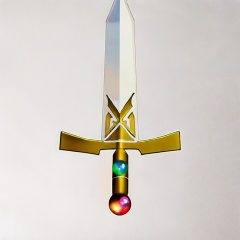 | 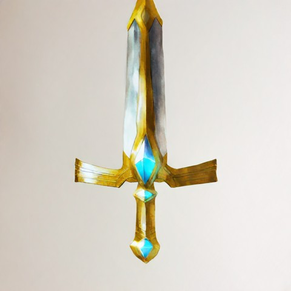 | 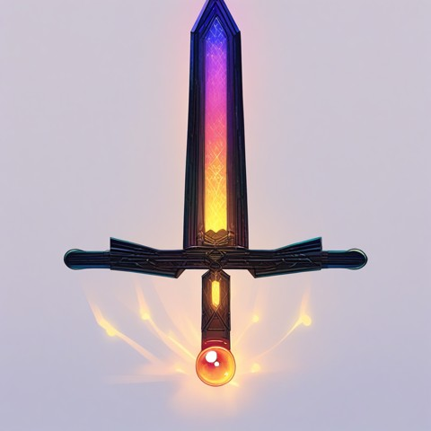 | 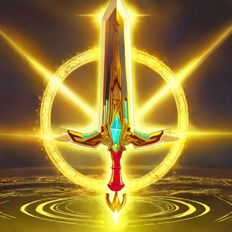 | 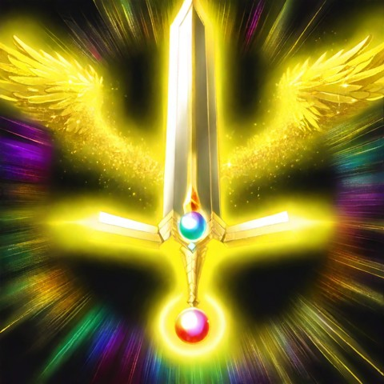 |
| 裁きと慈悲の聖杖 (LR) | 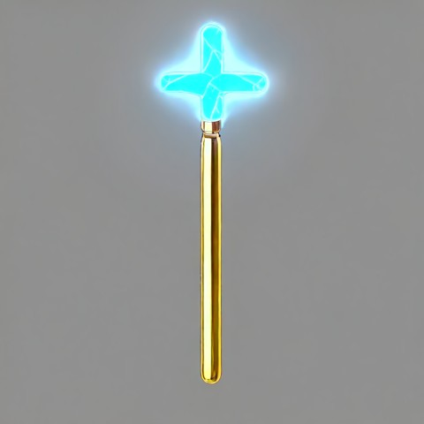 | 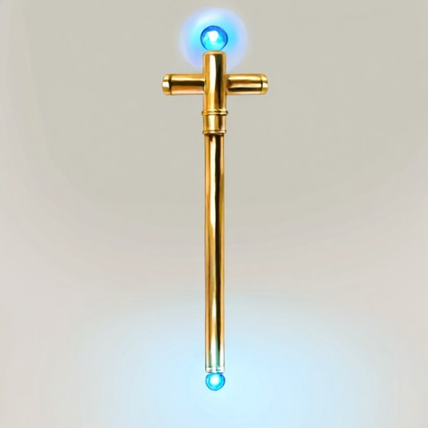 | 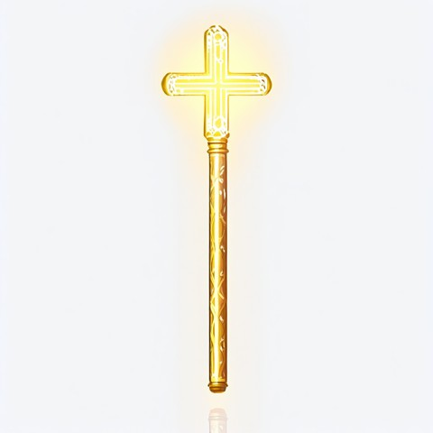 | 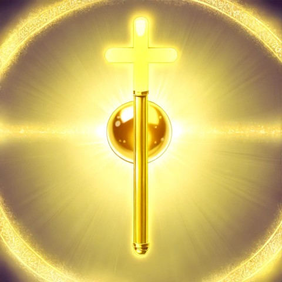 | 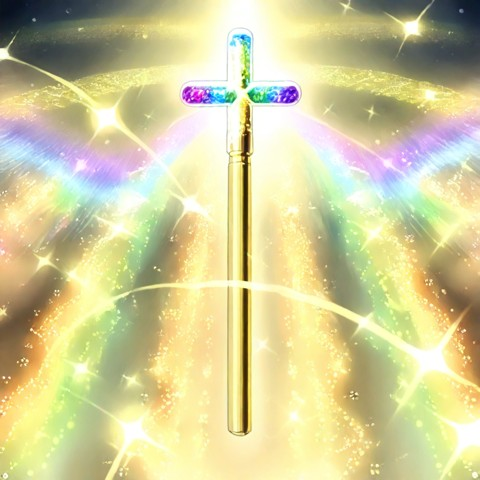 |
| 終焉の杖 (UR) | 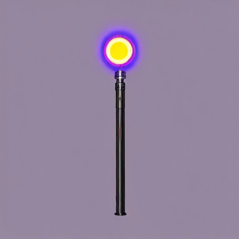 | 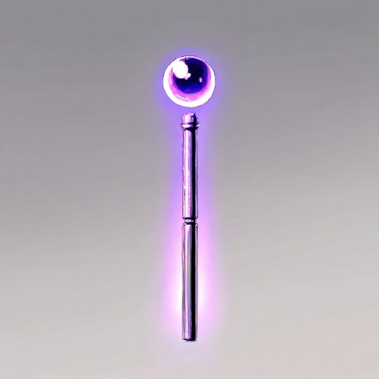 | 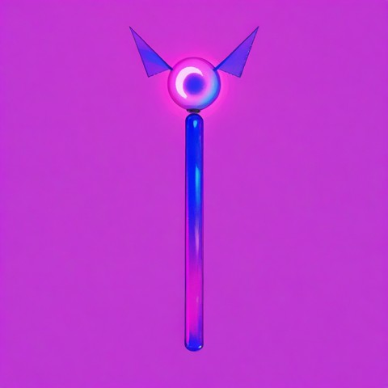 | 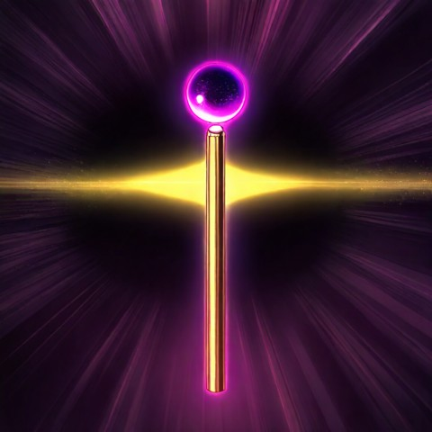 | 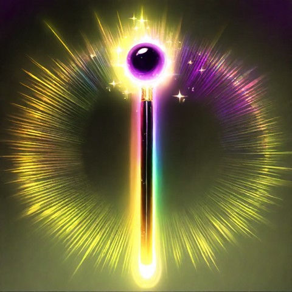 |